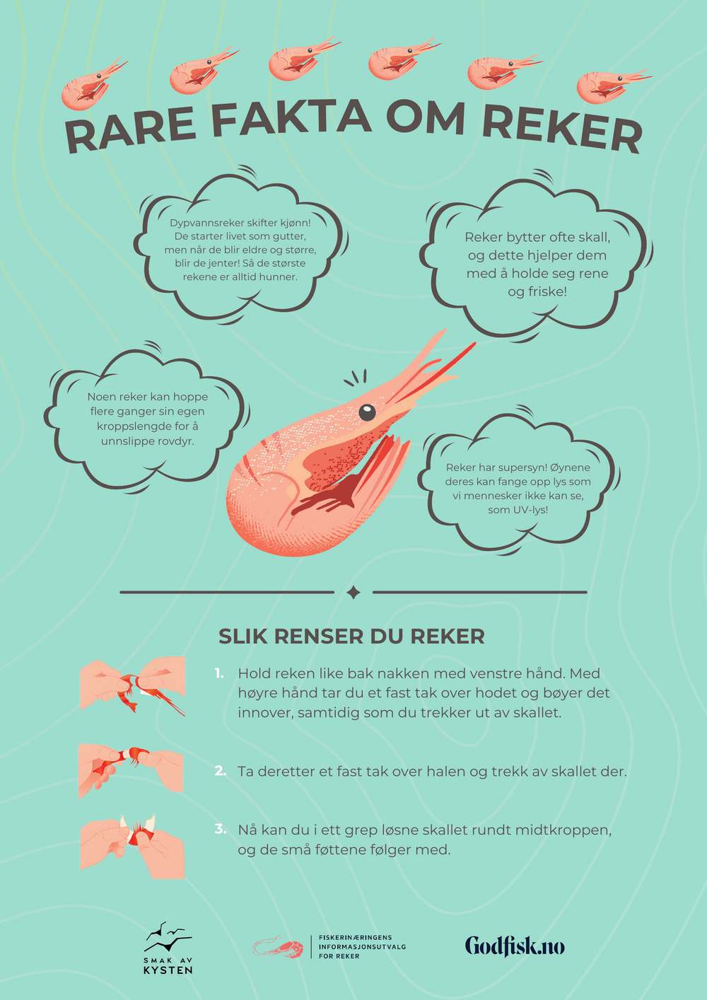
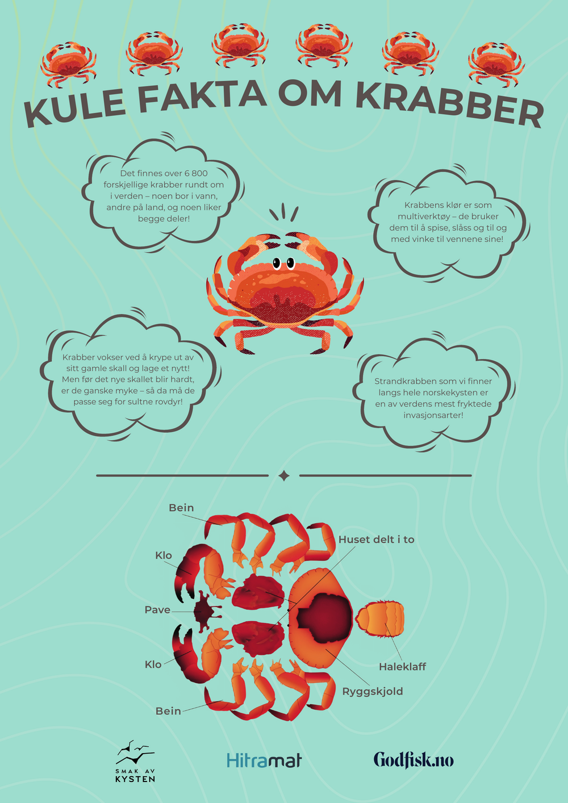

«Noe av det sterkeste grafiske materialet vi har hatt» — festivalleder med over ti år i selskapet
Oversikt
Jeg designet to store informasjonsplakater til Bergen Matfestival: «Rare fakta om reker» og «Kule fakta om krabber». Plakatene ble trykt i stort format og plassert ved «båsene» på festivalen som viste frem reker og krabber. Målet var å formidle gøye fakta på en måte som engasjerte barn — og som foreldrene også kunne lese sammen med dem.
Problem
Festivalen trengte informasjonsmateriell som ikke føltes tørt eller voksent. Innholdet skulle være lærerikt, men aller mest gøy — og det måtte fange oppmerksomheten til barn i et travelt festivalmiljø, der det konkurrerer med mye annet.
Kontekst
Plakatene skulle stå fysisk ute på festivalen, i stort trykkformat, ved utstillinger av reker og krabber. Jeg jobbet i tett dialog med min veileder i selskapet, som oppfordret meg til å være kreativ og lage noe le-kent. Jeg skulle bruke selskapets eksisterende illustrasjoner — ikke lage nye dyr fra bunnen — men kunne sette dem sammen på nye måter.
Mål
- Målgruppe: primært barn, sekundært foreldre.
- Gjøre fakta om sjømat tilgjengelig, morsomt og minneverdig.
- Holde uttrykket i tråd med festivalens merkevare.
- Lage et format som kunne brukes på nytt for andre arter senere.
Research & tilnærming
Jeg tok utgangspunkt i hvordan barn faktisk forholder seg til språk. Ord som «rare» og «kule» er gjenkjennelige, morsomme og lavterskel for barn — de inviterer til nysgjerrighet. Den innsikten ble styrende for både tittelvalg og tone i hele serien.
Prosess
Jeg bygde en tredelt layout som gikk igjen på begge plakatene:
- Topp: en overskrift med et banner laget av reke- eller krabbe-illustrasjoner repetert etter hverandre.
- Midt: en stor illustrasjon av enten reke eller krabbe, omkranset av tankebobler med gøye fakta som svever rundt dyret.
- Bunn: en praktisk demonstrasjon — hvordan man renser reker, eller oppbygningen av en krabbes kropp.
Jeg gjenbrukte selskapets eksisterende illustrasjoner, men satte dem sammen på en leken måte i tråd med veiledningen jeg fikk.
Nøkkelvalg
- Ett format, flere arter: jeg designet bevisst en mal (banner → stor illustrasjon med fakta-bobler → praktisk bunn) som fungerer for ulike dyr. Det betyr at festivalen kan lage flere plakater i samme serie uten å starte på nytt.
- Språk tilpasset barn: «rare» og «kule» fremfor mer nøytrale ord — et lite, men avgjørende grep for målgruppen.
- Tankebobler som bærer faktaene: gjør informasjonen lett å skanne og leke-vennlig, fremfor tette tekstblokker.
Endelig løsning


Resultat
Plakatene ble trykt i stort format og brukt aktivt på festivalen. Festivallederen — med over ti år i selskapet — ble svært positivt overrasket og beskrev det som «noe av det sterkeste grafiske materialet» de hadde hatt. Like viktig: malen kan gjenbrukes for fremtidige arter, så verdien strekker seg utover de to plakatene.
Refleksjon
Det jeg er mest fornøyd med er at jeg ikke bare laget to plakater, men et system. Å tenke gjenbruk fra start gjorde leveransen mer verdifull for kunden. Med mer tid ville jeg testet plakatene på faktiske barn før trykk, for å se hvilke fakta som engasjerte mest.
Lærdom
- Å designe for en mal fremfor en enkeltleveranse gir kunden varig verdi.
- Små språkvalg har stor effekt når man designer for en spesifikk målgruppe.
- Kreativ frihet innenfor en eksisterende merkevare gir ofte de sterkeste resultatene.